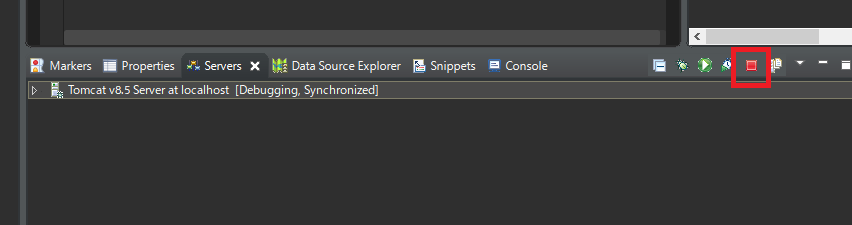

[Java] 38. Javaでウェブサービスプロジェクト(JSP Servlet)を作成する方法
こんにちは。明月です。
この投稿はJavaでウェブサービスプロジェクト(JSP Servlet)を作成する方法に関する説明です。
ウェブというプログラムはServer(Web Server)とClient(Browser)の間に決めっている標準規約でソケット通信することということです。
簡単に説明すると、Client(Browser)でURLアドレス含めているパスとParam String(ホストアドレスの?の後で設定されている値)と基本的なhttpヘッダー情報を作成してServerに要請すれば当該な値を計算して規約とおりに返事して接続を切る規約をウェブサービスといいます。
それで我々はウェブサービスサーバを構築するためにはブラウザから要請される値を解析してその値に合わせて返事ヘッダーとデータ値を作成しなければならないです。
それをコンソール環境で作成することでは大変難しいことになります。
Javaには特定な要請を自動にパーシングして我々が簡単に宣言されている変数などを通ってデータを簡単に取得するし、応答ヘッダーやデータ値を作成する時にも簡単なルールを通りにリターンすることで簡単にウェブサービスを作成することができます。
それをJava Server Page(JSP)といいます。
参考に、我々がウェブサービスを作成する時にストラッツやスプリングなどの話をよく聞きます。ストラッツやスプリングなどはウェブプログラミングのフレームワークのライブラリです。それがウェブプラットフォームではありません。
フレームワークというのは我々がプログラムを作成する時によく使う関数やライブラリ、そして複雑なアルゴリズムを簡単に作成するように手伝ってくれる集約されたライブラリということに思えばよいです。つまり、基本的にJSPプロジェクト上でこのJSPをもっとしやすく扱うためのライブラリです。
それで始めにJavaでウェブサービスを作成することならフレームワークを習う前にJava Servletに関して理解する必要があります。
link - https://ja.wikipedia.org/wiki/Java_Servlet
先にサーブレットプロジェクトを作成する前にはIDEツールにトムキャットを設定する必要があります。以前の投稿でトムキャットを設定する方法に関して作成したことがあります。
link - [Java] 37.イクリプス(eclipse)でトムキャット(tomcat)を設定する方法
トムキャット(Web application server)を設定したらウェブサービスプロジェクトを作成しましょう。
IDEツール(イクリプス:eclipse)のNew Project -> Otherを選択しましょう。

その中でWeb -> Dynamic Web Projectを選択してNextボタンを押下しましょう。
参考にStatic Web ProjectとDynamic Web Projectの差異はStaticの場合はサーブレット環境ではなく、ただサーバにウェブページを要請するとディレクトリにあるウェブページ(html)を転送するサーバです。つまり、要請によってhtmlを修正したり値を入れて応答するプロジェクトではありません。
つまり、要請によってhtmlページのデータを変換するためにはDynamic Web Projectを作成しなければならないです。

そしてプロジェクト名とトムキャット設定とmodule versionが合っているかを確認してFinishボタンを押下しましょう。

※参考にイクリプス(Eclipse)のプラグインをエンタプライズバージョンでインストールしないとウェブサーブレットを作成することで問題ありません。基本イクリプスは上のイメージみたいに作動しません。
つまり、Web Servletプラグインを別途にインストールしなければならないです。面倒なのでエンタプライズバージョンでインストールしましょう。
link - [Java] 1. Javaとは？、Javaインストール、Eclipseインストール
プロジェクトを生成したらまずweb.xmlをを確認しましょう。web.xmlとはサーブレットで使う環境変数ファイルみたいことです。各Web Serverの環境と構築仕様が違うので別途の設定が必要です。
web.xmlがプロジェクトで見えない場合は下記通りの方法で生成すればよいです。

なぜかいつからこのweb.xmlが自動に生成しません。
web.xmlが生成されたら基本的な内容を確認しましょう。
<?xml version="1.0" encoding="UTF-8"?>
<web-app xmlns:xsi="http://www.w3.org/2001/XMLSchema-instance"
xmlns="http://xmlns.jcp.org/xml/ns/javaee"
xsi:schemaLocation="http://xmlns.jcp.org/xml/ns/javaee
http://xmlns.jcp.org/xml/ns/javaee/web-app_3_1.xsd"
version="3.1">
<!-- プロジェクト名 -->
<display-name>HelloworldTest</display-name>
<!-- rootの場合読み込むページリスト -->
<welcome-file-list>
<welcome-file>index.jsp</welcome-file>
</welcome-file-list>
</web-app>
welcome-file-listタグがあります。このタグはウェブサービスがrootを呼び出す時に、つまりhttp://ホストアドレス/の場合にindex.jspファイルを読み込むことだと設定することです。
私の場合はindex.jspを設定しました。
そうしたらindex.jspファイルを作成してウェブブラウザにhello worldを表示しましょう。

<%@ page language="java" contentType="text/html; charset=UTF-8" pageEncoding="UTF-8"%>
<!DOCTYPE html>
<html>
<head>
<meta charset="UTF-8">
<title>Insert title here</title>
</head>
<body>
Hello world
</body>
</html>
その後にサーバを起動しましょう。


※Window -> Browser設定
イクリプス(eclipse)には基本ブラウザにも確認できますが、基本ブラウザなら少しおかしく見えるため、よく使うChromeブラウザを利用して結果を確認するほうが良いです。

一応、ウェブサービスは起動しました。でも、我々が作成したいことはStaticプロジェクトみたいにただウェブページを応答することではなく、サーブレットページです。
つまり、ブラウザが要請する値によりプログラム処理をして結果をリターンすることです。
まず、起動したウェブサーバを落ちます。

そしてプロジェクトからサーブレットを追加しましょう。

私はTestというサーブレットを作りました。

そうすると下記通りのイメージみたいにサーブレットが生成されます。
// パッケージ設定
package test;
import java.io.IOException;
import javax.servlet.ServletException;
import javax.servlet.annotation.WebServlet;
import javax.servlet.http.HttpServlet;
import javax.servlet.http.HttpServletRequest;
import javax.servlet.http.HttpServletResponse;
// ページ要請ホスト
@WebServlet("/Test")
// ホスト名とクラス名は必ず同じに作成する必要ない。でも、クラス管理をしやすくするために合わせる方が良い。
public class Test extends HttpServlet {
// シリアルキー、HttpServletクラスは基本的にSerializableを継承している。
private static final long serialVersionUID = 1L;
// コンストラクタ
public Test() {
super();
}
// ブラウザにmethodがget方式に呼び出す時に実行される関数
// パラメータrequestはブラウザから要請した値があるデータ
// パラメータresponseはブラウザに応答する値を格納するデータ
protected void doGet(HttpServletRequest request, HttpServletResponse response)
throws ServletException, IOException {
// response.getWriter()関数でデータ領域のStreamを受け取る。
// 基本的な応答パラメータにServed atのデータを格納して要請urlを格納する。
response.getWriter().append("Served at: ").append(request.getContextPath());
// 改行を格納する。
response.getWriter().append("<br />");
// Hello world文字を格納する。
response.getWriter().append("Hello world");
}
// ブラウザにmethodがpost方式に呼び出す時に実行される関数
// パラメータrequestはブラウザから要請した値があるデータ
// パラメータresponseはブラウザに応答する値を格納するデータ
protected void doPost(HttpServletRequest request, HttpServletResponse response)
throws ServletException, IOException {
// doGet関数を呼び出す。
// つまり、get方式の要請とpost方式の要請の結果は同じ。
doGet(request, response);
}
}
作成したらまたサーバを起動しましょう。
私はホストを/Testに指定した場合、Servletを要請することに作成したのでウェブブラウザパスにTestを入力して接続しましょう。

結果をみれば改行タグがそのままに表示されました。ソースビューで確認しましょう。
改行がそのままに表示されたことは正常なHTMLタグではないからです。
つまり、htmlドキュメントではなくtextドキュメントでブラウザが認識しました。
正常なhtmlタグはDocumentタグが必要だしhtmlタグから始まってbodyタグなかでデータを入れなければならないです。
ここまでJavaでウェブサービスプロジェクト(JSP Servlet)を作成する方法に関する説明でした。
ご不明なところや間違いところがあればコメントしてください。
- [Java] 45. JPAを設定する方法2019/10/10 07:29:43
- [Java] 44. Web Spring frameworkのviewで使うプログラム言語(JSTL) - XML2019/10/09 07:34:08
- [Java] 43. Web Spring frameworkのviewで使うプログラム言語(JSTL) - 関数、データベース2019/10/08 07:43:33
- [Java] 42. Web Spring frameworkのviewで使うプログラム言語(JSTL) - コア―、フォーマット2019/10/07 07:38:13
- [Java] 41. Web Spring webframeworkのControllerからajaxの要請する時、jsonタイプのデータを返却する方法2019/10/04 19:24:43
- [Java] 40. Web Spring frameworkでControllerを扱う方法2019/10/03 20:02:06
- [Java] 39. Spring Web Frameworkを利用してウェブサービスプロジェクトを作成する方法2019/10/02 21:00:22
- [Java] 38. Javaでウェブサービスプロジェクト(JSP Servlet)を作成する方法2019/10/01 21:48:08
- [Java] 37.イクリプス(eclipse)でトムキャット(tomcat)を設定する方法2019/09/30 22:19:34
- [Java] 36.コーディングする時、よく使うコーディングパターンとステップ数を減らす方法2019/09/27 20:39:09
- [Java] 35. コーディング規約設定(Google Standard coding style)2019/09/26 21:31:25
- [Java] 34. WindowでMariaDBをインストールする方法2019/09/25 19:58:30
- [Java] 33. オープンライブラリを参照する方法(eclipseからmavenを連結)2019/09/24 19:35:54
- [Java] 32. Reflection機能を使う方法(Annotation編)2019/09/24 00:19:25
- [Java] 31. Reflection機能を使う方法(Variable編)2019/09/20 22:34:40
- [CentOs] ジェンキンス(Jenkins)をインストールする方法2021/10/18 18:28:58
- [Project design] 詳細設計(インターフェース設計と抽象化作業)2021/10/18 18:23:15
- [Project design] 基本設計(画面設計とDB設計)2021/10/17 21:21:11
- [Design pattern] 1-4. デザインパターンの抽象ファクトリーパターン(Abstract factory pattern)2021/10/15 19:31:03
- [Project design] 要件定義(要求事項整理)2021/10/15 19:28:58
- [C#] 52. Reflection機能を使い方 - Variable2021/10/15 19:27:37
- [Project design] プロジェクトを工程(ウォーターフォール vs アジャイル)2021/10/14 18:36:04
- [C#] 51. Reflection機能を使い方 - Method2021/10/14 18:34:21
- [C#] 50. Reflection機能を使い方 - Class2021/10/13 18:34:13
- [C#] 49. Operator(演算子)のオーバーロードを使い方2021/10/12 18:28:42
- [C#] 48. IEnumerableとIEnumerator、そしてyieldキーワード2021/10/11 19:49:33
- [C#] 47. Nugetを使い方(外部ライブラリ)とデータベース(MariaDB(Mysql))を使い方、そしてトランザクション(Transaction)2021/10/08 18:58:57
- [Window] MariaDBをインストールする方法2021/10/08 18:56:05
- [C#] 46. データベース(MSSQL)に接続する方法2021/10/07 18:39:58
- [C#] 45. ネットワークソケット通信(Socket)を使い方2021/10/06 19:06:25